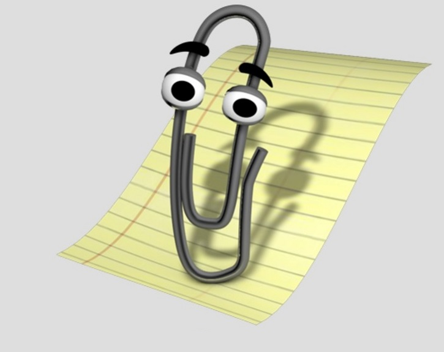

Pamiętasz Pana Spinacza? To znaczy że pamiętasz czasy, kiedy jedynym sensownym pakietem biurowym był Microsoft Office. Na szczęście te czasy minęły bezpowrotnie!
Obecnie na rynku można przebierać w realnych alternatywach dla Worda czy Excela. Wybór może przyprawiać o zawrót głowy. Jak wybrać najlepsze narzędzie: najbardziej ergonomiczne, działające stabilnie i wydajnie, a przy tym zapewniające kompatybilność z oprogramowaniem Microsoftu? Celem tej strony jest aby pomóc Ci w tym trudnym wyborze. Opisaliśmy 3 najciekawsze bezpłatne pakiety biurowe. Najciekawsze w naszej opini. Wiadomą sprawą jest że każdy użytkownik oczekuje od takiego narzędzia czegoś innego. Wielu szuka po prostu zwyczajnego narzędzia do edycji tekstów. Bardzo dużo osób to ludzie którym nie podobają się ceny, za które Miscrosoft oferuje swoje produkty, więc szukają darmowej alternatywy. Niektórzy, to specjaliści pracujący na co dzień w Excelu czy Powerpoicie, poszukujący narzędzi które pozwolą im szybciej i wydajniej wykonywać ich pracę.
Na poszczególnych podstronach znajdziesz krótki opis 3 pakietów biurowych: Dokumenty Google, LibreOffice i WPS Office, ze szczególnym uwzględnieniem czym różnią się od Microsoft Office i jaki mają poziom zgodności z tym potentatem rynku. Zachęcamy do lektury!
Źródło grafiki:
https://www.gratispng.com/png-aeblvv/